Everything you need for a shift: signing in, recording sales, checking allergens, receiving deliveries, counting stock, logging waste and checking your schedule. Keep it by the counter.
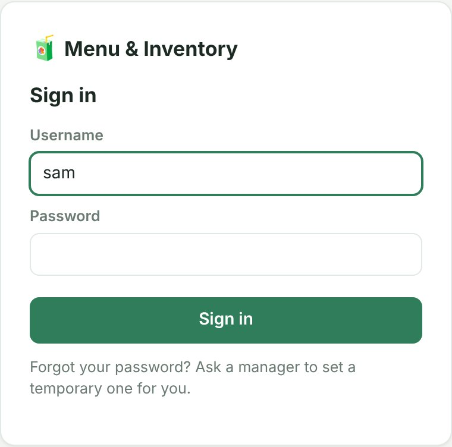
The first time you sign in with a temporary password, the app asks you to choose your own before you can do anything else.
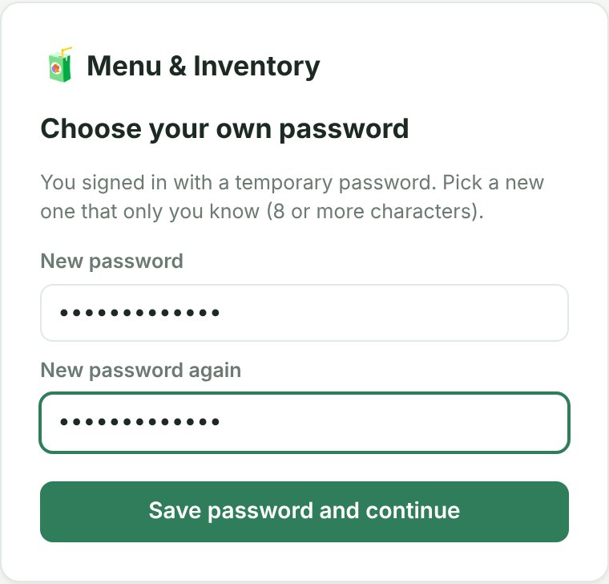
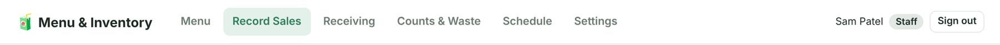
| Tab | Use it to |
|---|---|
| Menu | See every drink, its ingredients and its allergens. |
| Record Sales | Ring up drinks so their ingredients come out of stock (if your shop does this here; see section 5). |
| Receiving | Check in a delivery against its order. |
| Counts & Waste | Count what's on the shelf, and log anything thrown away, spilled, remade or given away. |
| Schedule | See who is working when, including your own shifts. |
| Settings | Change your password. |
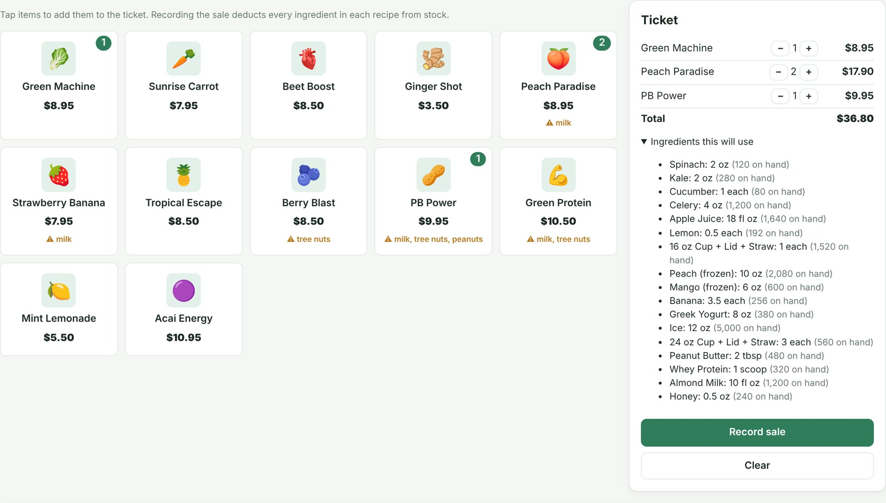
Every drink that contains one of the nine major allergens shows a ⚠ Contains: line on the Menu tab and under its button on Record Sales. The list comes from the drink's ingredients.
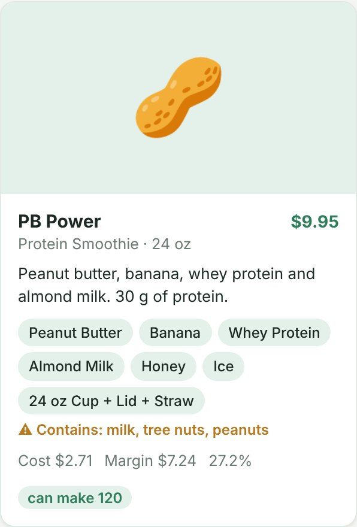
When a delivery arrives, check what's actually in the boxes against the order before you put it away.
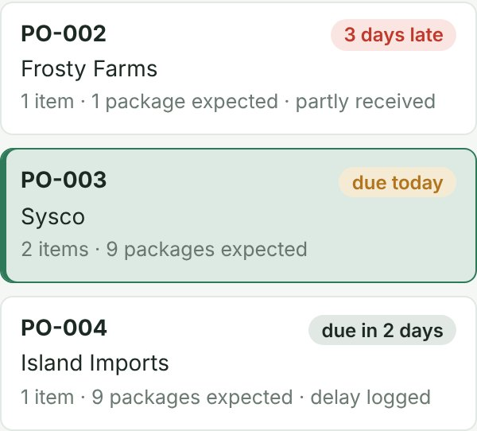
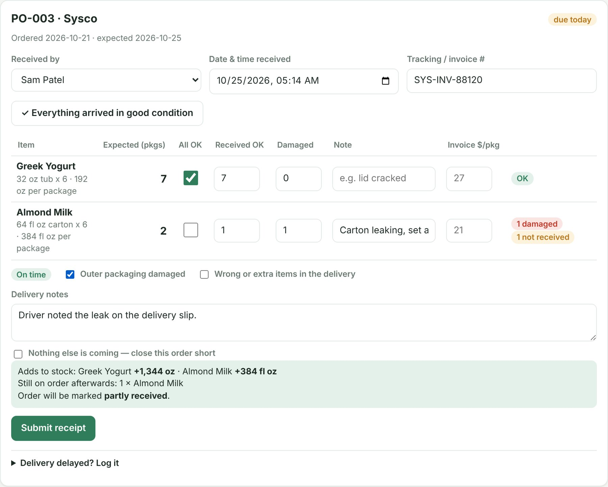
| Situation | What to do |
|---|---|
| Some items didn't come | Enter only what arrived. The rest stays on order and the order stays in the list, so the next delivery can be checked in against it. |
| Damaged items | Count them as Damaged, not OK. Damaged items are not added to stock. Keep them aside and photograph them if your manager asks. |
| "Nothing else is coming — close this order short" | Only tick this if your manager or the supplier says the missing items won't be sent. |
| Invoice $/pkg column | Leave blank unless your manager asks you to copy in a price from the invoice. |
Open the order, tap Delivery delayed? Log it, write what happened (e.g. "supplier called, truck a day late"), set the new expected date, and tap Log delay.
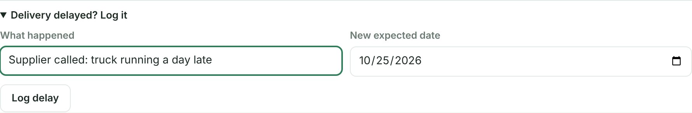
Your manager will tell you what to count and when (often a few high-value items at closing).
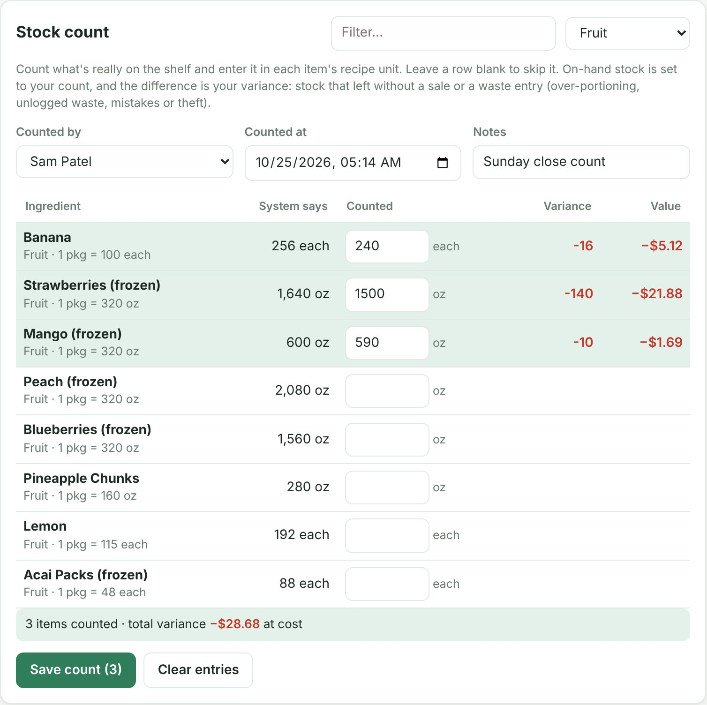
Log anything that leaves stock without being sold, as soon as it happens.
| Reason | Use for |
|---|---|
| expired / spoiled | Past its date, gone off |
| spilled / dropped | Accidents |
| remade drink | Made wrong and remade |
| staff drink | Drinks for staff |
| free / comped drink | Samples, giveaways, apologies |
| damaged, prep trim, other | Anything else (add a note) |
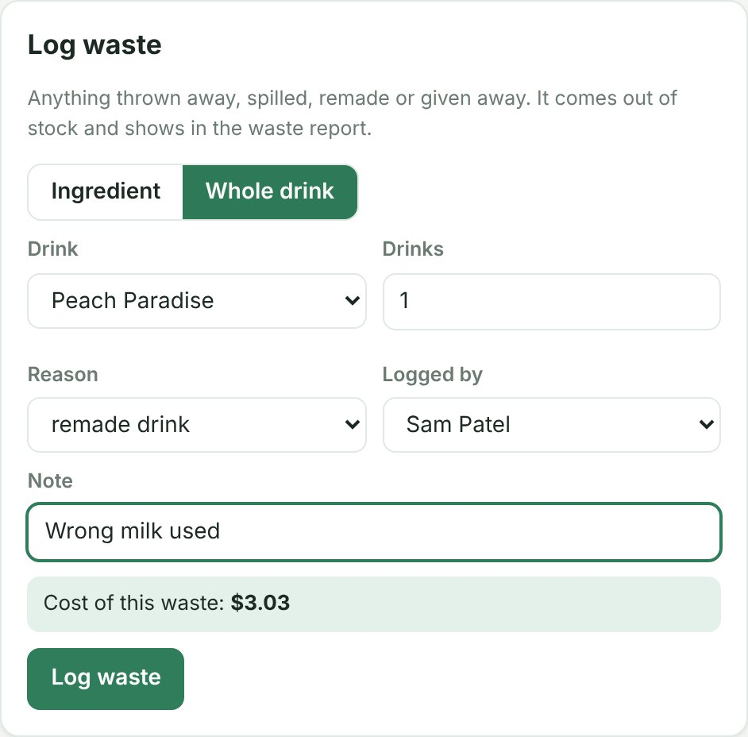
Open Schedule. Each person has a row and each day a column. Use ◀ and ▶ to change week and This week to come back. Shifts in the Open shifts row still need someone: tell your manager if you can take one. Only managers can change the schedule.
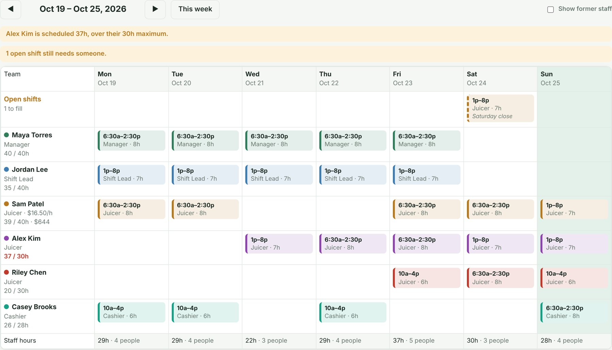
Tap Sign out at the top right. Always sign out of a shared tablet at the end of your shift, so nobody else works under your name.
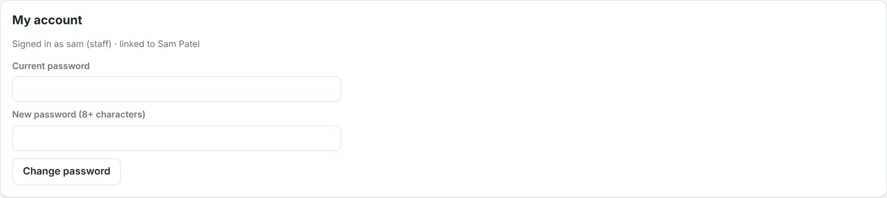
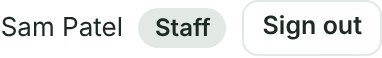
| You see | What it means / what to do |
|---|---|
| The sign-in box appears in the middle of a shift | You were signed out (12 hours without using the app, or the app was restarted). Sign in again; nothing you saved is lost. |
| "Too many attempts. Wait a few minutes" | 5 wrong passwords. Wait 5 minutes, then try again or ask a manager to reset your password. |
| "Choose a new password first" | You are on a temporary password. Reload the page and the app will ask you to choose your own. |
| "This needs a manager account" | That action is for managers. Ask one. |
| You recorded a sale, count or delivery by mistake | Tell a manager straight away, with what you entered. A wrong waste entry can be removed by a manager. |
| A drink button is faded | Stock says something it needs has run out. Check the shelf and tell a manager. |